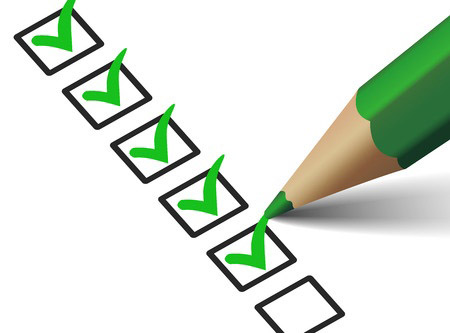
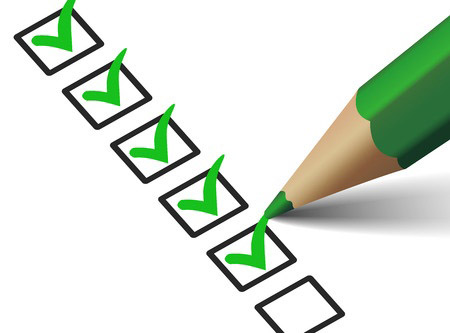

c'est le sport
1. Au sing. Activité physique, le plus souvent de plein air et nécessitant généralement un entraînement, qui s'exerce sous forme de jeu ou de compétition, suivant des règles déterminées; p. méton., pratique de cette activité. Domaine, développement, pratique, vocabulaire du sport.Il était fort, alerte et gai, donnant tous ses jours au sport et toutes ses nuits aux fêtes (Maupass., Contes et nouv., t. 2, Duchoux, 1887, p. 698).V. amateurisme ex. 3: ... ils ont découvert qu'ils pouvaient continuer à jouer, dans leur âge mûr, comme ils jouaient, enfants. Cela s'appelle le sport. Le sport a tué le spleen. Sport, en anglais, veut dire jeu. Nous imitons les Anglais et faisons du sport. Mais sport, en français, ne veut pas dire jeu. En français, sport n'a pas d'autre sens que sport. Et le sport n'est pas du tout un jeu pour les Français. J.-R. Bloch, Dest. du S., 1931, p. 135. − Vieilli. Course de chevaux. Des courses fameuses dans les fastes du sport anglais (Goncourt, Ch. Demailly, 1860, p. 320). 2. Au sing. ou au plur. Forme spécifique que prend cette activité physique, considérée comme une discipline autonome ayant ses règles, son organisation, son entraînement, ses codes, ses valeurs. Sport national, moderne, passionnant, populaire; sport de masse; journal, chroniqueur de sport; secrétaire d'État à la Jeunesse et aux Sports. Leur numéro d'hier est le comble! Une scène, à son milieu, arrêtée net par un article de sport, me paraît une drôle de façon de respecter la littérature! (Flaub., Corresp., 1880, p. 34).Malgré l'agitation de l'existence, la fausse activité des sports et des transports rapides, nos grands systèmes régulateurs restent au repos (Carrel, L'Homme, 1935, p. 275).V. amateurisme ex. 4. ♦ Sport de compétition. En France, les sportives pratiquant le sport de compétition sont passées de cent mille en 1940 à sept cent mille en 1965 (Jeux et sports, 1967, p. 1302). a) [Suivi d'un adj. ou d'un compl. déterminatif précisant le domaine ou le type du sport] Sports aériens. Sports liés à l'aviation. Les Françaises se sont inscrites brillamment au palmarès des sports aériens: vol à voile, aviation (Jeux et sports, 1967, p. 1307).Sports athlétiques et gymniques. Sports faisant appel au dynamisme des mouvements fondamentaux et cherchant la perfection dans l'enchaînement de mouvements complexes. Dans la gamme des sports athlétiques les sauts occupent une des meilleures places car ils constituent un exercice hygiénique et utilitaire (R.
 
